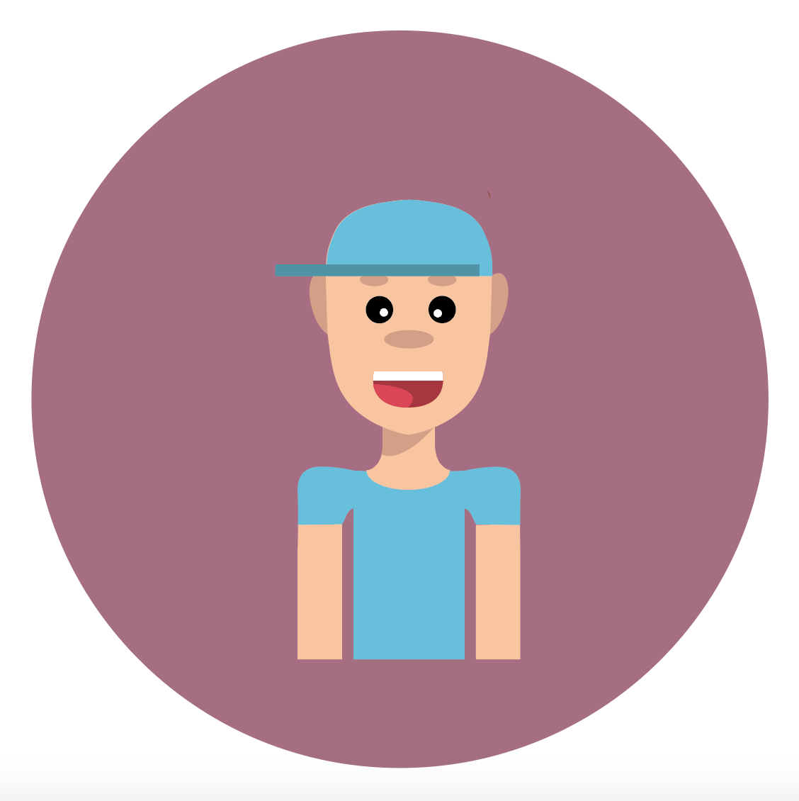
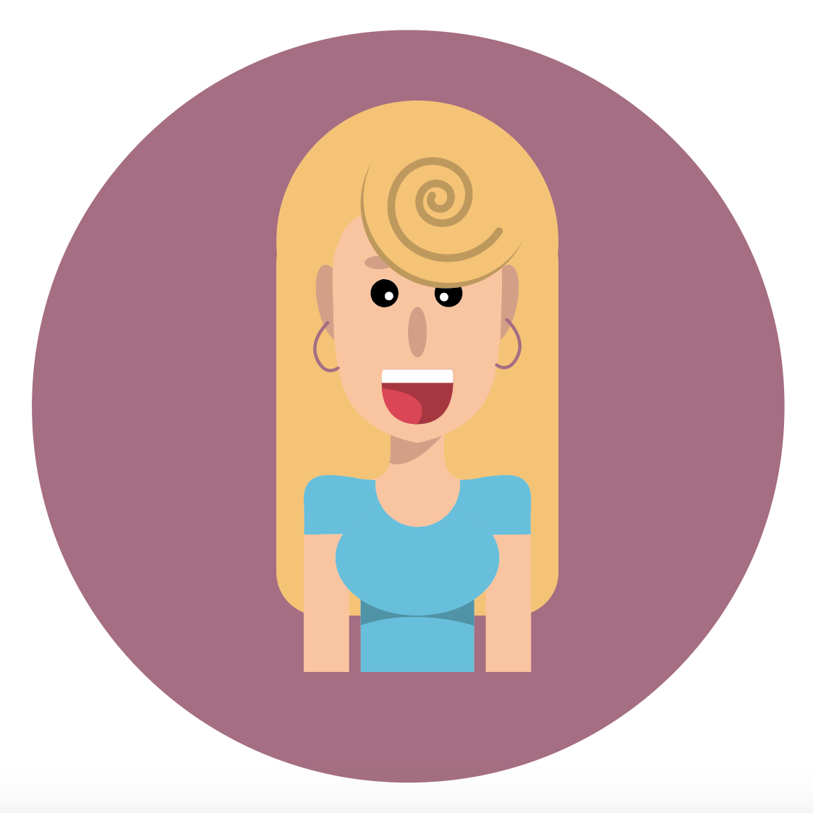

Elena is een meisje van 18 jaar en is volop bezig aan haar studie biologie. Ze zit op kot in Kortrijk en heeft net haar rijbewijs behaald. Zij en haar vrienden zijn grote festivalgangers en gaan vaak naar concerten. Elena heeft de taak gekregen om voor haar 5 vrienden ook tickets te bestellen. Op de site zal ze dus zoeken bij de praktische informatie of ze parking heeft voor haar auto en zo niet hoe ze daar anders zullen geraken. Ook zal ze bij tickets er voor meerdere personen moeten kunnen bestellen.
Chantal is een alleenstaande moeder van 45 jaar. Haar zoon oudste zoon Max is net 16 geworden en wil naar zijn eerste concert gaan. Hij is al naar een paar fuiven van de jeugdbeweging geweest maar The Rooftop Tour zou zijn eerste grote evenement zijn. Voor zijn verjaardag heeft hij een ticket gevraagd. Chantal twijfelt nog, ze weet niet wat er op zo’n concerten gebeurt en is een beetje ongerust. Ze zal in het fotoboek kijken om te zien wat voor sfeer er hangt. Bij praktische info zal ze de regels kunnen lezen en wat er allemaal verboden is. Ze zal ook kunnen zien dat er security aanwezig zal zijn. Dit zal haar een goed gevoel geven.
Felix is vijftien en een enorme R&B fan. Samen met zijn vrienden heeft zelfs een eigen bandje samengesteld waar hij in rapt en zingt. Toen hij zag dat The Rooftop Tour ook naar Belgie komt was hij meteen verkocht. Na een grondig gesprek met zijn ouders hebben ze besloten dat hij mocht gaan onder voorwaarde dat hij alles zelf zou regelen. Het probleem is dat Felix en zijn vrienden nog geen rijbewijs hebben en dat een taxi te duur zou zijn. Ook is het de eerste keer dat Felix zelf online zou betalen. Felix zal kijken bij praktische informatie of er vervoer aanwezig is. Hij zal ook zelf zijn tickets moeten bestellen. Omdat hij pas 15 jaar is zal dit allemaal heel makkelijk en duidelijk moeten zijn.
Laure is 17 jaar en een echt luxepaardje. Ze is vooral bezig met instagram en noemt haarzelf een influencer. Ze kent alle nieuwe trends en is heel erg bezig met haar uiterlijk. Ze wil graag haar vriendje verassen met tickets voor The Rooftop Tour. Zelf is ze wel een R&B liefhebber maar vind de drukte en geduw niet zo aangenaam. Voor haar is het belangrijk om te kunnen genieten en geen last te hebben van andere mensen. Laura gaat bij praktisch kijken wat er precies in een vip ticket zit en of het de prijs wel waard is. Ze zal ook zeker eens een kijkje nemen naar de fotomuur om te kijken of het wel niet te ruig voor haar is.
======= >>>>>>> parent of c5cf639... De Witte Joke